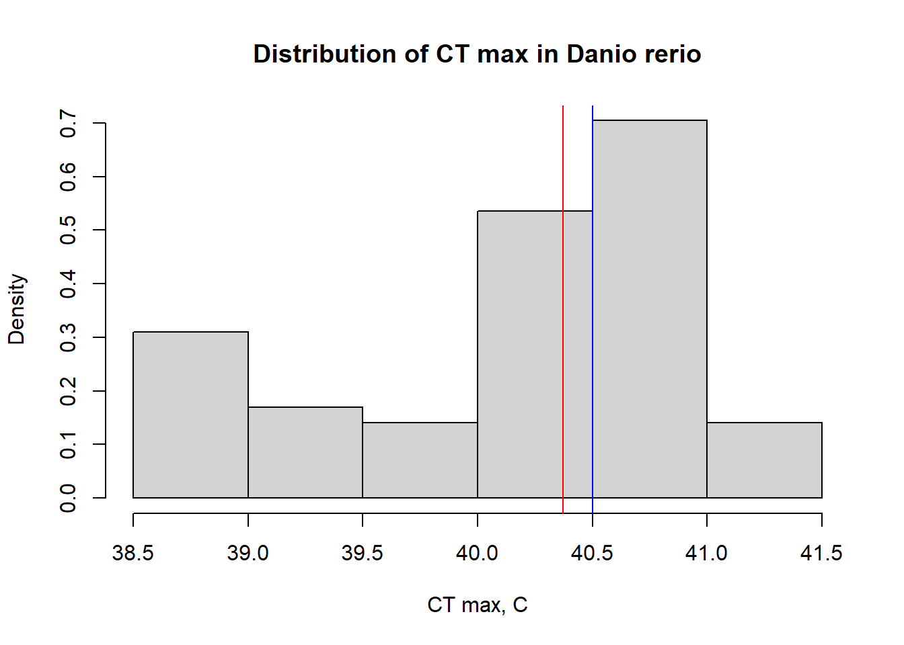
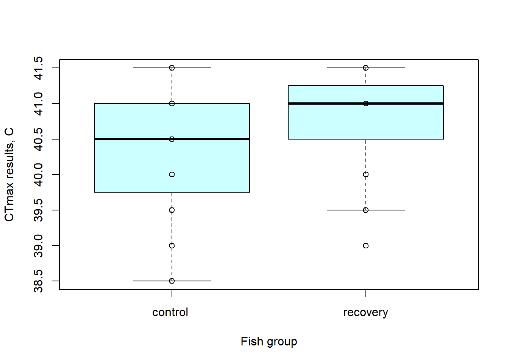
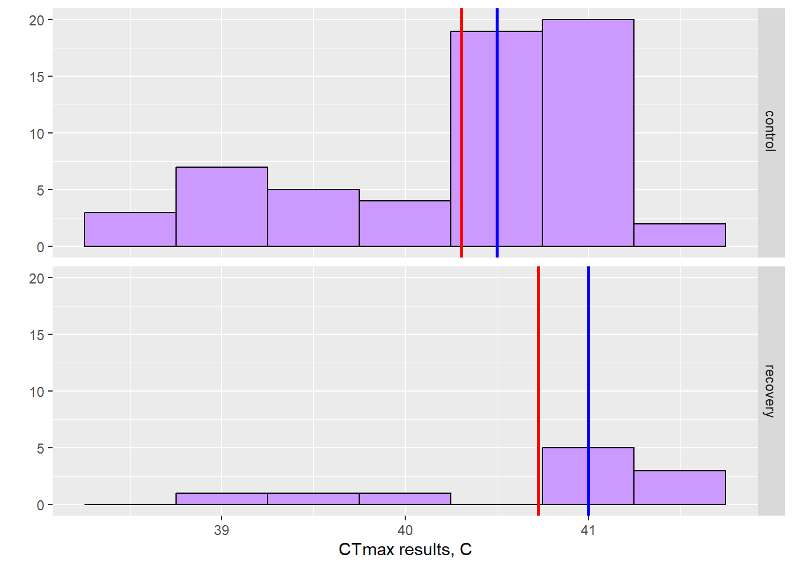
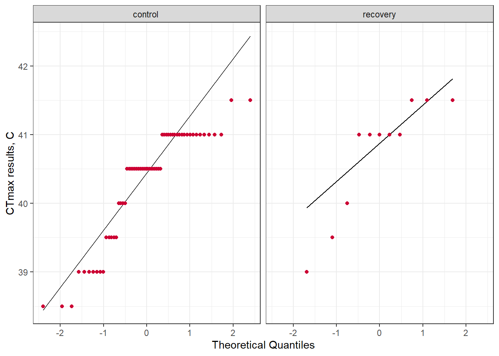

library (tidyverse)
library (rstatix)
library (here)
library (unibeCols)CTmax measurements in Danio rerio
Library installation
Introduction
Recently, a relatively new method, called CTmax, has been developed to determine the heat tolerance of zebrafish. During the test, adult fish are exposed to increasing water temperatures at a steady rate of 0.3°C per minute until loss of equilibrium (LOE, loss of ability to maintain an upright swimming position, defined as uncontrolled and disorganized swimming for two seconds) and then allowed to recover.
A first attempt to implement the CTmax test was made at the Institute of Fish and Wildlife Health (FIWI), Univeristy of Bern, in 2023. Here is the report of the first results obtained while measuring the heat tolerance in the control group and the recovery group (which was previously exposed to the 36 C for 2 weeks).
Data collection
These data were collected in January 2023 at FIWI, University of Bern.
results <- read.csv(here("data/raw/CTmax_assay_results.csv"))Data modification
results1 <- results [-(72:151),]
results1$date <- as.character(results1$date)
results1 <- results1 %>%
mutate(date = as_date(date, tz = NULL, format = NULL))
results1 <- results1 %>%
mutate(across(c(fish_group, testing_group_number), factor))
mean_resC <- mean(results1$results_c)
median_resC <- median (results1$results_c)Data analysis
Figure 1. Distribution of all CTmax results obtained in Danio rerio (where the blue color line is a sample median and the red is a sample mean).
hist(results1$results_c, freq = FALSE, xlab = "CT max, C", main = "Distribution of CT max in Danio rerio")
abline(v = mean_resC, col = "red") + abline(v = median_resC, col = "blue")
integer(0)Figure 2. Distribution of CTmax results obtained in Danio rerio according to the treatment group (Boxplot).
boxplot(results1$results_c~results1$fish_group, xlab= "Fish group", ylab= "CTmax results, C", col="#CCFFFF")
points(results1$results_c~results1$fish_group) 
Figure 3. Distribution of CTmax results obtained in Danio rerio according to the treatment group (where the blue color line is a sample median and the red is a sample mean).
results2 <- results1 %>% group_by(fish_group) %>% mutate(mean = mean(results_c))
results2 <- results2 %>% group_by(fish_group) %>% mutate(median = median(results_c))
ggplot(results2, aes(x = results_c)) +
geom_histogram(binwidth=0.5, colour= "black", fill="#CC99FF") +
facet_grid(fish_group~.) +xlab("CTmax results, C") + ylab("")+
geom_vline(aes(xintercept = mean, group = fish_group), colour = 'red', lwd = 1)+
geom_vline(aes(xintercept = median, group = fish_group), colour = 'blue', lwd = 1)
Figure 4. Distribution of CTmax in Danio rerio according to the treatment group (QQ plot).
results1 %>%
ggplot(aes(sample = results_c)) +
geom_qq_line(distribution = stats::qnorm) +
geom_qq(color = "#CC0033", distribution = stats::qnorm) +
xlab("Theoretical Quantiles") +
ylab("CTmax results, C") +
theme_bw() + facet_grid(~fish_group)
Shapiro test
shapiro_test <- results1 %>%
group_by(fish_group) %>%
rstatix::shapiro_test(results_c)
shapiro_test# A tibble: 2 × 4
fish_group variable statistic p
<fct> <chr> <dbl> <dbl>
1 "control " results_c 0.851 0.00000336
2 "recovery" results_c 0.803 0.0104 Kruskal-Wallis test
kruskal_test <- kruskal.test(results_c ~ fish_group, data = results1)
kruskal_test
Kruskal-Wallis rank sum test
data: results_c by fish_group
Kruskal-Wallis chi-squared = 4.088, df = 1, p-value = 0.04319Wilcox test
wilcox_test <- results1 %>%
rstatix:: wilcox_test(results_c ~ fish_group)
wilcox_test# A tibble: 1 × 7
.y. group1 group2 n1 n2 statistic p
* <chr> <chr> <chr> <int> <int> <dbl> <dbl>
1 results_c "control " recovery 60 11 207 0.044Results
At the figure 1 we can observe that the distribution of CTmax is skewed, since the sample mean and the median are not equal to each other. Also the shape of the histogram indicates that here we’re dealing not with the normal distribution.
Figure 2 helps to see the difference in CTmax measurements in our 2 tested groups. According to the boxplot, we have higher CTmax values in the recovery group. A separate distribution of CTmax values can be observed in Figure 3. It is worth noting that in Figure 3 the number of fish tested is plotted on the y-axis.
The QQ plot or quantile-quantile plot (Figure 4) was used to compare our two groups separately to the normal distribution (x-axis). A closer look at the result shows that most of the data points are not close to the reference line, indicating that our data sets are not normally distributed.
The Shapiro test was used to confirm our previous graphical results. The p-values obtained for both groups indicate that the data are not normally distributed (control group = 0.00000336; recovery group = 0.0104).
For further analysis of our data Kruskal-Wallis test was chosen. Since the obtained p-value is slightly less than 0.05, we can assume that there’s a weak evidence of a difference between the control group and the recovery group. The Wilcox test shows similar results to the previous test.
Conclusions
Based on the results obtained, we can speculate that there is evidence of a difference between the response to heat of the control group and the recovery group (p-value=0.04319 in Kruskal-Wallis test). The recovery group also showed slightly higher CTmax results compared to the control group fish. Because of the low number of fish tested (60 in the control group, 11 in the recovery group), the results of this study need to be replicated and validated.